Field Notes
A short series introducing RangerTrak one piece at a time. Every post has a hands-on test you can do in about ten minutes, and ends by asking what worked for you and what didn't. New posts every few days. RSS feed.
-
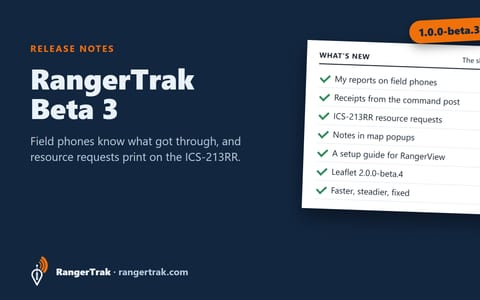
Release notes ·
RangerTrak Beta 3: What’s New
Version 1.0.0-beta.3: field phones keep a list of what got through and take receipts from the command post, ICS-213RR resource requests, and the ranger’s notes in map popups.
-
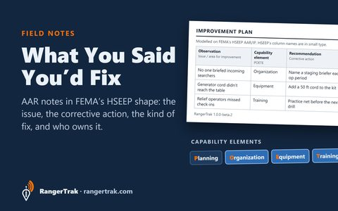
Field Notes ·
What You Said You’d Fix: AAR Notes in FEMA’s HSEEP Shape
AAR notes now take HSEEP’s capability element, and the printed improvement plan is modelled on FEMA’s AAR/IP, so a group’s hot-wash notes fit a county exercise without retyping.
-
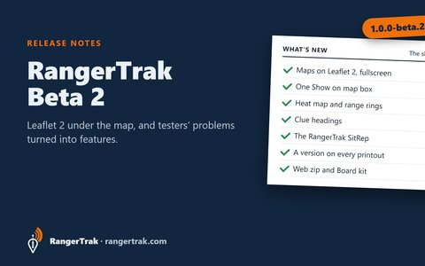
Release notes ·
RangerTrak Beta 2: What’s New
Version 1.0.0-beta.2: the map moves to Leaflet 2 with a fullscreen button, one Show on map box, clue headings, the RangerTrak SitRep, and a version on every printout.
-
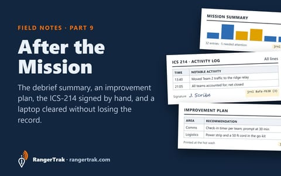
Part 9 ·
After the Mission: Summaries, AAR and the Final Report
The debrief summary, AAR notes as an improvement-plan table, the ICS-214 on FEMA’s form, the roster changes for your coordinator, and clearing the laptop without losing the record.
-
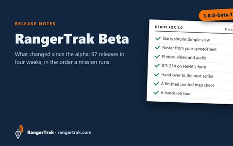
Release notes ·
RangerTrak Beta: What Changed Since the Alpha
RangerTrak is in beta, version 1.0.0-beta.1: 97 releases in four weeks, in the order a mission runs. Everything planned for 1.0 is in; from here to 1.0 it’s fixes.
-
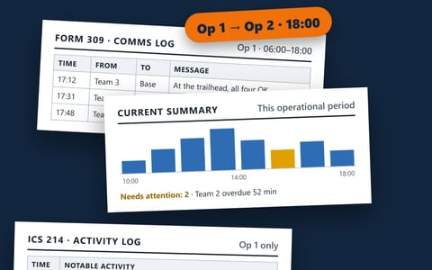
Part 8 ·
Shift Change: Op Periods, Scribes and Laptops
The end of an operational period: a two-minute brief for the next scribe, the period’s 309 and 214 on paper, and the log moved to another laptop without a lost or doubled entry.
-
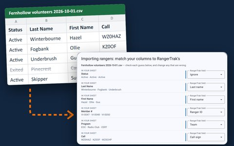
Part 7 ·
Your Roster Is Already in a Spreadsheet
Bring the Excel or CSV lists your group already keeps into RangerTrak, see what will change before anything does, and never lose a phone number to a blank cell.
-
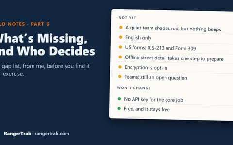
Part 6 ·
What’s Missing, and Who Decides
The gaps I haven’t closed yet, stated plainly, the commitments that won’t change, and an invitation to put RangerTrak through a real tabletop.
-
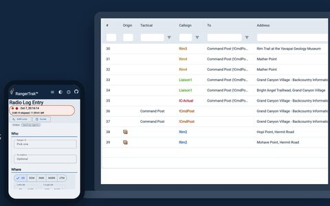
Part 5 ·
More Than One Laptop
A ranger’s own phone sending its reports home, a Report Packet that only ever adds, setup files for a new device, and an optional live view for the command post.
-
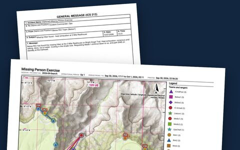
Part 4 ·
From Radio Log to Form 309 and ICS-213
Correcting the log as you go, why a note is not a message, and printing the same reports onto FEMA’s own ICS-213 and a real Form 309 Communications Log, with nothing retyped.
-
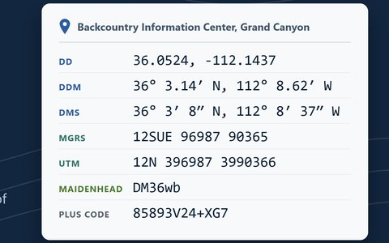
Part 3 ·
However They Read It Out
Positions in whatever format the radio gives you, from MGRS and UTM to Maidenhead and Plus Codes, all converted on the device with no signal. Plus the pin-in-the-water check, and the two maps that both work offline.
-
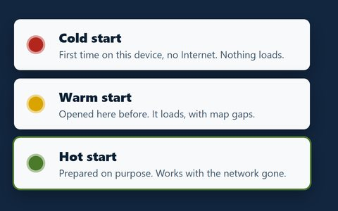
Part 2 ·
Hot, Warm, Cold
The five minutes of preparation that decide whether RangerTrak works when the network goes down, the readiness dot that keeps score, and an airplane-mode test to run on your own device. Out with the alpha.
-
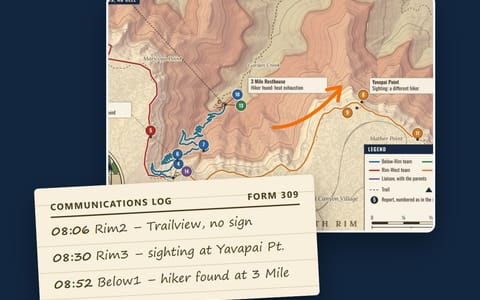
Part 1 ·
The Paper Log, Without the Paper
What RangerTrak is, who it's for (the scribe at the table, not the team in the field), a ten-minute tour with demo data, and what it doesn't do yet.